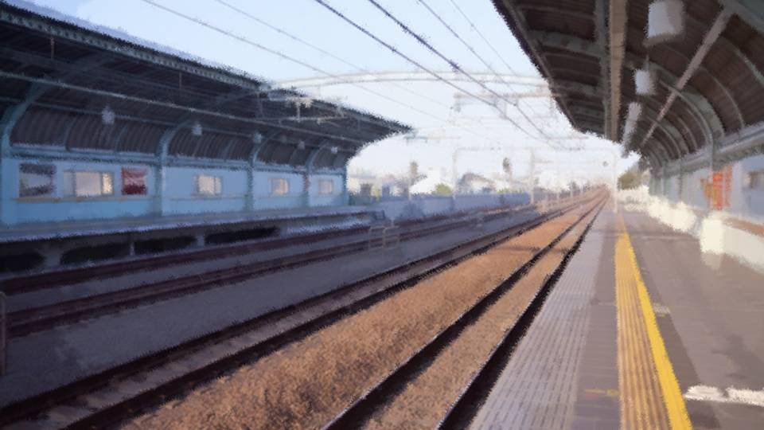
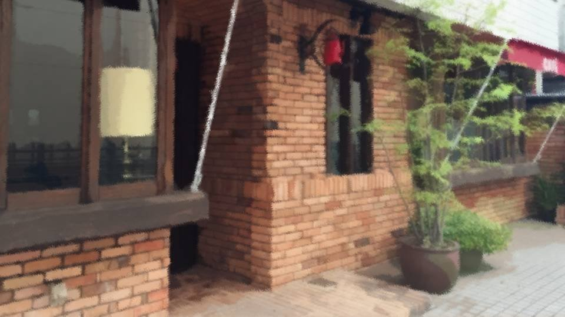
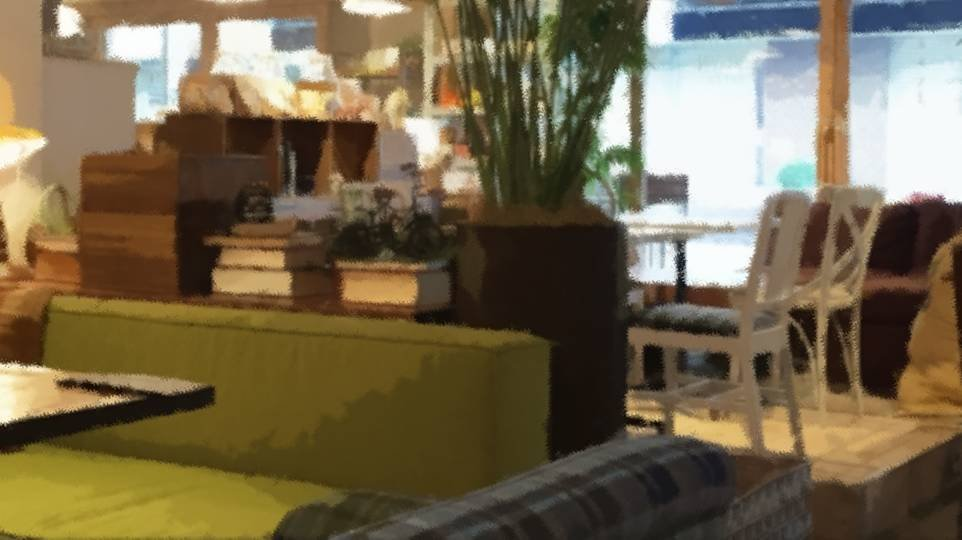

Script 0000209C

「やっと着いたあ。皆上市、来るの久しぶりだなあ。
でも、ちょっと早く着いちゃったかも。先生との約束の時間まであと1時間もあるよ……」
「カフェでも入ろう」

「おお、有名なカフェチェーン店、ベンズコーヒー！
さすがにまだ元木町にはないなあ。
よし、入ろう！」

「いらっしゃいませ、ご注文お決まりでしたらどうぞ」
「えっと、カフェラテ下さい」
「サイズはどうされますか？」
「サイズ表は…… えっと、ペキーノ、 メージュ、 グレンジ、 オーバサイゼド……？ ああ、これはポルトガル語で小、中、大、特大って意味か。 えっとメージュで！」
「えっと、カフェラテ下さい」
「サイズはどうされますか？」
「サイズ表は…… えっと、ペキーノ、 メージュ、 グレンジ、 オーバサイゼド……？ ああ、これはポルトガル語で小、中、大、特大って意味か。 えっとメージュで！」
「うん、まあ可もなく不可もなくって味かな」
「今のうちに、資料を読み直しておこう」
「…………
…………
…………」
「何でだろう……集中できないな……。
この雰囲気に慣れてないからかな……」
「古郡先輩……大丈夫かな……。
電話してみようか……。
いやでも、もし寝てるなら起こしちゃうし……」
「あれ？ 五島さん？」
「あ、先生、おはようございます」
「五島さんもここだったか」
「はい、ちょっと早く着いたので」
「調子はどう？ 大丈夫そう？」
「五島さんもここだったか」
「はい、ちょっと早く着いたので」
「調子はどう？ 大丈夫そう？」
「はい、バッチリです！」
「そっか、まあ五島さんの発表、教授陣も期待しているらしいからね。 ああごめん、プレッシャーだったかな」
「いえ…… それくらい期待されないとやりがいもないので……」
「五島さん、大丈夫？ なんか元気ないぞ？」
「そっか、まあ五島さんの発表、教授陣も期待しているらしいからね。 ああごめん、プレッシャーだったかな」
「いえ…… それくらい期待されないとやりがいもないので……」
「五島さん、大丈夫？ なんか元気ないぞ？」
「そうですかね……。
あはは！ やっぱりちょっと緊張してるんですね！？
あ、あの、最終チェックしましょう！」
「よし」
「よし」
「というわけで、今後の無認可薬品については……
えっと……
あれ？ 何だっけ？」
「特に日本では薬品認可の遅れが……
じっけん……？
あれ？ この漢字なんて読むんだっけ……」
「治験かな？」
「あ、はい、治験です。 治験モニターの募集を…… えっと……」
「五島さん、ほんとに大丈夫？」
「治験かな？」
「あ、はい、治験です。 治験モニターの募集を…… えっと……」
「五島さん、ほんとに大丈夫？」
「大丈夫……
です……」
「…………」
「…………」
「先生……あの……」
「ん？」
「先生、ごめんなさい！ やっぱり、帰ります！」
「ちょ、五島さん！？」
「ん？」
「先生、ごめんなさい！ やっぱり、帰ります！」
「ちょ、五島さん！？」
「やっぱり、古郡先輩、放っておくなんて……！
古郡先輩、もうほんとにやばいよ……！
でも……先輩には何て言えばいいんだろう……！」